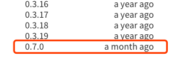

Hexo博客DIY（1）建立基于Hexo的静态博客
前言：作为一个码畜，各类博客应该是离不了手的，看着别人的博客花花绿绿，我想很多人都会想过自己写写博客。但是现在写博客面临着一些问题，第一个是免费博客网页越来越少了，新浪网易都已关停，另一个是支持好的博客系统，其自定义性又远不及自建博客，比如 CSDN。为此，作为 _全球最大的同性交友平台—— GitHub_，其提供托管的静态页面 GitHub Page 就是一个非常好的选择，配合 Hexo 即可实现丰富的博客自定义功能。本文记录如何从零开始建立个人博客页，更多 DIY 选项欢迎参考：博客 DIY 系列。
1. 建立静态博客仓库
我的博客选择的是 GitHub 托管、Hexo 生成静态页的形式，因此本文将基于这种模式介绍。
首先，在 GitHub 上建立一个个人博客页，非常简单，直接新建一个仓库，名称为 xxx.github.io，其中 xxx 为自己的 GitHub 用户名，要注意是用户名而不是名字，用户名是可以用来登录的那个。创建好了之后就已经可以通过 xxx.github.io 来访问了，初始页面大概长这个样子：

需要注意的是，这个仓库和将来存放、自定义博客功能的文件夹不是同一个目录，这个仓库仅用来部署博客的最终效果。比如，在本地我的博客及相关功能管理目录在 A 文件夹，每次修改完之后，通过 Hexo 部署到 GitHub，会从 A 文件夹内自动获取相关设置再部署到 xxx.github.io 仓库内，但是 A 文件夹和这个仓库的文件并不是 Git 同步关系，仓库内的文件仅仅包含了最终网页显示需要的部分文件，而 A 文件夹则包括了所有建立和维护博客相关的文件。如果想要对 A 文件夹做 Git 备份，可以再新建一个仓库专门用来同步这个文件夹。
2. 连接SSH
GitHub 中提供了一些便捷更换的主题，可以根据自己的喜好切换。Jekyll 主题部署快速，点几下鼠标即可，但由于 Hexo 主题具有更加自由的编辑性，因此还是选择后者。为了能在本地使用更方便的工具编写博客、定制外观，需要将这个仓库 Clone 到本地，而且使用 Hexo 驱动时，还需要和 GitHub 建立远程安全连接。建立连接的过程大致如下：
在 Github 设置中点击新建SSH公钥
查看本地是否存在目录
~/.ssh若存在，建议删除后重新建立
执行命令：
1
2# xxx@yyy.com 输入自己的 GitHub 账号邮箱
ssh-keygen -t rsa -C "xxx@yyy.com"回车执行后根据提示输入自己的账号密码，若提示 id 文件已保存，则创建成功
目录下将生成两个文件：
id_rsa.pub和id_rsa打开 id_rsa.pub，复制其内容并粘贴到 GitHub 新建公钥的 Key 栏并保存，Title 可随意输入

本地终端验证密钥，执行命令：
1
shh -T git@github.com
若显示
Hi XXX! You've successfully authenticated...则连接成功

3. 安装必要环境
由于需要在本地对博客进行管理，因此本地环境的重要性不言而喻。通常，基于 Hexo 驱动的静态博客，只需要这三个环境就够了：Git、Hexo、Node.JS，其中 Node.JS 主要是使用其内含的包管理器 npm，通过这个管理器可以为博客部署很多有意思的插件。另外有个小提示，如果在国内使用感觉网速太慢的话，可以用 cnpm 命令替换。
Git 下载地址：Git 下载
Node.JS下载地址：Node.JS 下载
终端安装 Hexo 命令（在安装完 Node.JS 之后）：
1
npm install -g hexo-cli
如果安装结果出现红字报错无权限的情况，可以尝试以下两个命令其中一个：
1
2
3
4
5# 尝试1：
sudo npm install -g hexo-cli
# 尝试2：
sudo npm install --unsafe-perm --verbose -g hexo检查环境安装情况：
1
2
3
4
5
6
7
8# Git 环境检查：
git --version
# Node.JS 环境检查：
node -v
# Hexo 环境检查：
hexo --Version如果均能输出对应版本号即表示环境配置成功。
4. 初始化本地静态博客页
Hexo 环境安装完以后，就可以在本地建立管理目录了。在终端进入想要作为博客维护目录的路径，并执行以下命令初始化：
1 | hexo init |
执行完之后，目录下应该会出现大致如下的文件及文件夹：

简单介绍一下：
- node_modules 是模块目录，包含了博客基础和自定义功能所需的组件
- public 就是生成最终部署到网页上去所需文件的目录
- scaffolds 是博客一些页面的模板，修改这里面的文件可以自定义新增对应类别的文件时默认的格式
- source 就是博客内所有页面包括的文件了，包括文章、分类、标签等等
- themes 就是博客的主题，目录内可以包括各种不同的主题，并且可以在博客设置文件内随时更换
这些不同的目录及包括的文件、对应 DIY 会在下文更详细地介绍。
Hexo 目录初始化完毕后，通过命令：
1 | npm install |
可以一键式安装所有必须的组件，为了能通过 Hexo 部署到 GitHub 上去，还要再额外安装 Git Deploy 组件：
1 | npm install hexo-deployer-git --save |
5. 常用Hexo命令
常用的 Hexo 命令大致有如下数条：
hexo init [folder]：初始化本地项目，可指定路径 folder，或默认为当前目录hexo generate：（可简写为hexo g）生成本地静态文件hexo server：（可简写为hexo s）启动本地服务器，启动后可在 localhost:4000 查看页面效果hexo deploy：（可简写为hexo d）部署到 Github（或其他代码托管网站），由根目录下的 _config.yml 文件设定hexo clean：清理缓存文件hexo new [layout] <title>：新建文件（夹），可指定文件类型 layout，或默认由 _config.yml 中的 default_layout 决定。必填项 title 用于指定文章标题，若参数值中含有空格，需使用英文双引号包括hexo --safe：安全模式，禁用加载插件和脚本，可在安装新插件遇到问题时启用hexo --debug：调试模式，用于将消息详细记录到终端和 debug.log 文件hexo --silent：静默模式，用于静默输出到终端
其中最最最常用的三个命令为：hexo clean、hexo g、hexo s，每一次对博客进行修改后，都需要用这三个命令（每条命令分别执行）清理之前的博客缓存、重新构建新博客页面、开启本地服务器并在本地预览效果，如果效果符合预期，就可以把 hexo s 替换为 hexo d，再重新执行这三个命令（也就是：hexo clean、hexo g、hexo d）。当需要连续执行 hexo g 和 hexo d 时，可以用 hexo g -d 这一条命令代替前两条（也就是：hexo clean、hexo g -d）。
6. 部署博客基本功能
到上一步为止，博客是已经建立完基础功能了，但此时本地博客和 GitHub 上的静态托管还没有建立联系，想要在本地维护的博客能同步到 GitHub 仓库上，使得外网能通过 xxx.github.io 网页形式访问，还需要配置一下本地的配置文件 _config.yml，改文件位于本地博客文件夹的根目录下面，使用任何一个文本编辑器打开，找到以下片段：
1 | # Deployment |
在其中的 repository 后面填写自己的博客页托管仓库地址：https://github.com/xxx/xxx.github.io，将其中的 xxx 替换为自己的 GitHub 用户名。修改完保存，至此即可通过上文讲述的 Hexo 命令将本地博客部署到 GitHub 上了。
另外还可以预先安装站点地图和百度站点地图生成插件：
1 | $ npm install --save hexo-generator-sitemap |
并在站点配置文件中进行如下配置：
1 | # 自动生成sitemap |
这样在部署后就会自动在博客根目录下生成对应的文件，可通过 博客地址/sitemap.xml 或 博客地址/baidusitemap.xml 访问。
7. 引入Next主题
默认的博客页使用的主题叫做“landscape”，可以在博客目录下的 themes 文件夹内找到，Hexo 官方的主题列表：Themes | Hexo，具体哪个主题好看就仁者见仁了，我自己在经过一段时间的搜索后找到两个比较心仪的，一个是简约风的 AirCloud，一个是偏浪漫的 Next，后来觉得 AirCloud 实在是过于简约了（逃），最终选择后者。此外，除了 Hexo 平台，Next 主题还支持 Farbox 和 Jekyll 平台。部署主题的方式很简单，都是下载主题文件（Next 主题下载），然后放进 themes 文件夹中，并在博客根目录下的配置文件 _config.yml 中选择上这个主题：
1 | # Extensions |
这里的 next 是主题文件夹的名字，主题文件夹的名字可以随便改（比如加上版本号，next711），只要这里同步更改即可。
_注意：由于在主题内，有许多设置或文件与博客站点的设置或文件有重名、覆盖等，因此从下文开始，一些名词的定义如下：_
- 站点根目录：表示最开始新建博客时选择的那个目录，整个博客文件夹的根目录，在路径中用 blog/… 表示，比如博客文章的目录即为：blog/source/_post/
- 主题根目录：表示下载的主题文件夹的目录，我的主题是 Next，其所属位置即 blog/themes/next/，在下文路径中将用 next/… 表示，比如 Next 主题文件中的语言包目录即为：next/languages/
- 站点配置文件：表示站点根目录下的
_config.yml文件 - 主题配置文件：表示主题根目录下的
_config.yml文件 - 安装组件：表示在站点根目录下通过终端命令安装指定组件/模块
- Hexo 命令三连：表示依次执行：
hexo clean、hexo g、hexo s，这三步仅是开启本地测试，可以在localhost:4000处查看效果，如果认为效果合意，请根据实际情况自行决定是否执行hexo d部署到仓库中
Hexo-Next 官方网站已经提供了很多基础个性化配置，包括主题样式、分类及标签、设置字体、RSS、代码块样式、公益 404、友链、搜索、打赏、背景等等，内置配置已经足够个性化，如果不追求更多自定义选项，现在的博客页面已经比较美观，想要写博客，只需要在博客根目录下执行：
1 | hexo new "XXXXX" |
其中 XXXXX 是新建的博客标题，同时也是文章的文件名，建议这里使用英文，不然博客文章的链接 URL 会有中文显得略不美观，如果想要正文标题是中文，只需要在：blog/source/_post/ 下找到刚才新建的文件，打开并修改上方 title 后面的文字即可，不会影响 URL 链接。在下方输入博客内容，完成后保存 + Hexo 命令三连即可。文章使用 MarkDown 格式编写，如果还不是很熟悉，可以搜索参照各种 MarkDown 格式介绍的文章，本文就不多做讲解了。
8. 解决low severity vulnerability
有时，在通过 npm install 或 npm install xxx 安装完包以后，终端会出现大致如下的信息：
1 | $ npm install |
提示“有一个低严重性的漏洞”，根据提示输入：
1 | $ npm audit fix |
很明显并没有用，反馈大致意思是“有 1 个漏洞需要人工检查，且无法更新”，使用强制修复试试：
1 | $ npm audit fix --force |
看来强制修复也不行，那就只好按它的建议手动查看了：
1 | $ npm audit |
这些信息似乎是和版本号有关，顺手打开给出来的网址：More info，看到如下信息：
果然，NPM 官方给出的解决方案也是升级 marked 版本到 0.7.0，先看看当前的版本信息：
1 | $ npm ls marked |
果不其然版本不是 0.7.0，先尝试更新后再次查看版本：
1 | $ npm update |
依然无法手动更新，那就手动把这个 Blog/node_modules/marked 目录删掉：
1 | $ npm ls marked |
提示依赖包 marked 被删除了，然后再重新安装：
1 | $ npm install |
仍然是 0.6.3 版本！内心是崩溃的，干脆直接覆盖安装一次 marked，再查看版本信息。执行：
1 | $ npm install --save marked |
现在问题来了，从层级结构上来看，手动执行安装后 Hexo 装了两个 marked，手动安装的这个 marked 是最新的 0.7.0 版本，被放在了原来老版本的目录下：Blog/node_modules/marked，而原本隶属于 hexo-renderer-marked 下面的老版本依赖包，由于被 hexo-renderer-marked 依赖，且手动安装了另一版本，导致其位置被自动放到：Blog/node_modules/hexo-renderer-marked/node_modules/marked 目录下。
也就是说，这个老版本的 marked，其版本并不是由 npm 管理的，所以 update 和 删掉重新 install 都无法更新，而手动安装的 marked 是直接由 npm 管理的，因此默认会安装最新版。这也说明被依赖的 marked 的版本号是在 hexo-renderer-marked 渲染引擎中控制的。
为了防止冲突，先卸载手动安装的 marked：
1 | $ npm uninstall --save marked |
现在 Blog/node_modules/ 下已经没有 marked 目录了，同时也手动删掉老版本的 marked 目录：Blog/node_modules/hexo-renderer-marked/node_modules/marked。
然后 再到之前的网页：点击这里 内点击 Versions 栏查看最新的 marked 版本：

接着找到 Blog/node_modules/hexo-renderer-marked/package.json，修改其中的依赖部分：
1 | ...... |
把 "marked" 字段后面的 "^0.6.1" 强制改为 "^0.7.0"，，最后再次执行：
1 | $ npm install |
看到这个结果说明已经没有报“低严重性漏洞”了，再查看一下版本号：
1 | $ npm ls marked |
OK！成功更新到 0.7.0 版本！假如执行这两步的时候依然报之前的信息，如果可以确保之前的步骤都是对的，可以暂时不管，通常是缓存信息还没有更新的缘故，把这两步执行完之后，退出并重新打开终端再查看 npm ls marked 即可看到已经更新。假如出现错误信息显示被删除，再执行一次 npm install 即可。
其实挺简单的一个问题，由于没有经验导致折腾了这么久，记录在此望读者少走弯路。另外，此时由于已经卸载了之前手动安装的 marked，因此这个依赖包的位置又回到了：Blog/node_modules/marked 下。
9. 解决FontAwesome不显示
某些情况下，在构建博客后，会出现图标不显示的问题，例如正常情况下我的博客应该是如下图所示：

但可能会出现如下图所示的情况：

同时，在页面上检查元素会出现一个报错信息：

原因是没找到目录下 FontAwesome 的 CSS 文件，但其实我们并不需要手动下载，Next 主题在生成部署时会动态到 FontAwesome 网站上下载相关样式，这时就考虑可能是 FontAwesome 的某个 CDN 连接挂了，可以在 Next 的主题配置文件 next/_config.yml 中切换一下：
1 | # Internal version: 4.6.2 |
重新部署，恢复正常。
9. 基于对象存储建立博客
未完待续
更多进一步的个性化欢迎参考：博客 DIY 系列